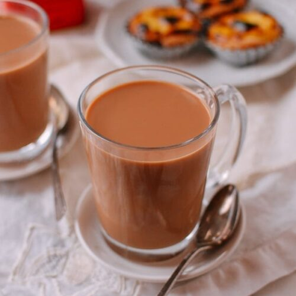

Tea

Description
Tea is another household name in India. An average Indian neraly consumes 3 cups of tes every day.
There is no better way of starting a day than taking tea and readin a newspaper. Tea is often served
to guests in Indian households. Tea creates bonds between people.
Ingredients
- tea leaves
- water
- milk
- sugar
Steps
- Take half a cup of water and warm it up
- Put a tea spoon of tea leaves in, and leave it for 2 mins
- Pour 1 cup of milk
- Put 1/2 tea spoon of sugar
- Boil it for 5 more minutes and your tea is ready